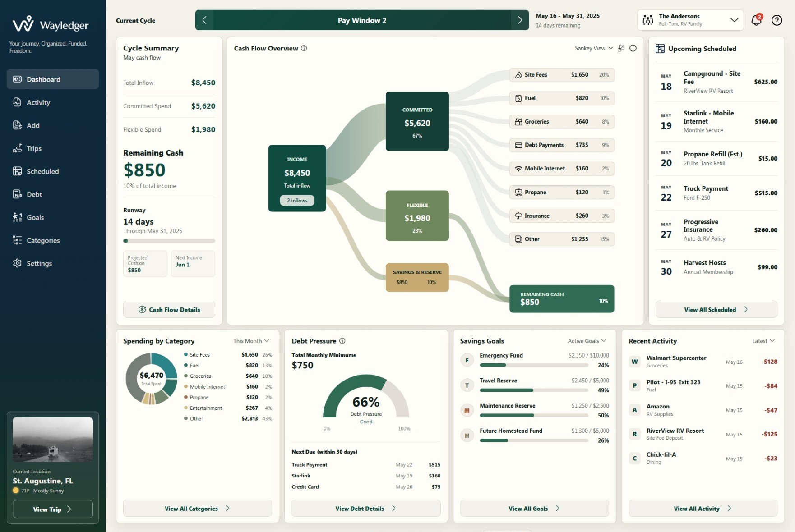

Plan by cycle and pay window
See the full month while focusing on what matters most between paydays.
Cash flow planning for life on the road
Wayledger helps RV families and frequent travelers plan around paydays, bills, campground fees, fuel, repairs, debt, and savings so they know what is actually safe to spend.
Why Wayledger
Normal monthly budgets do not show whether the next stretch of campground costs, fuel, groceries, bills, and repairs fit before the next payday. Wayledger shows what is actually safe to spend.
See the full month while focusing on what matters most between paydays.
Upcoming bills, debt payments, savings goals, and trips are accounted for.
Track campgrounds, fuel, repairs, and travel days so there are no surprises.

Your cash flow, clearly
Bring income, upcoming bills, debt payments, campground fees, fuel, groceries, repairs, and savings goals into one dashboard that shows your real cash flow.
Made for real travelers
Whether you travel full-time or seasonally, Wayledger adapts to how you live and get paid.
Simple by design
Set up your pay schedule so cash flow matches your real life.
Include bills, debt payments, groceries, subscriptions, and savings goals.
See the true cost of your trips, routes, and destinations.
Know your runway and make confident decisions between paydays.
Join us early
Manual-first cash flow planning for travelers who want clear control without bank syncing.
Founder members who help shape Wayledger before launch may receive Plus for Core pricing.
Questions answered
Wayledger is a cash flow planning app for travelers, RV families, and mobile households.
It is built for RV families, frequent travelers, snowbirds, travel workers, and anyone planning money around changing locations.
Wayledger focuses on pay windows, scheduled costs, travel expenses, debt pressure, and remaining runway.
Bank connections are planned for a future release. Manual entry and import-friendly workflows are part of the product direction.
Yes. Wayledger is designed to support manual income, expenses, transfers, scheduled payments, and trip costs.
Yes. Wayledger is being designed for desktop, tablet, and mobile so you can check your cash flow from home, the truck, or the campground.
Wayledger focuses on the money side of travel, including campground costs, fuel estimates, travel spending, and location-based expenses.
Wayledger is being built with privacy in mind. Sensitive data should be handled carefully, and future account connections should use secure providers.
Wayledger is preparing for early access. Join the list for preview invitations and launch updates.
Get Started
Join the list for launch updates, preview invitations, and early-access availability.